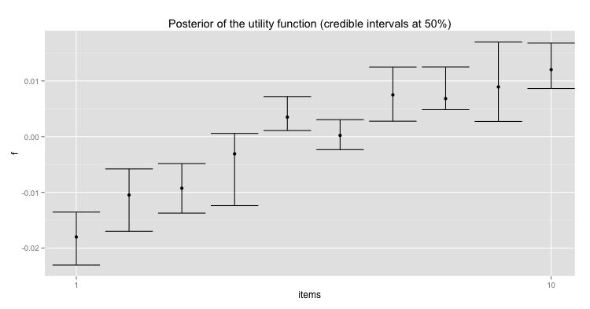

(draft)
Imagine we observe a set of pairwise preferences from a user. We denote this set by \(\mathcal{D} = \left \{ \mathbf{x}_i \succ \mathbf{x}_j \right \}\) where \(1 \leq i \leq m\) and \(1 \leq j \leq m\). Let us assume that the pairwise preferences depend on a latent utility \(f_i\) given to every item \(i \in X\) so that item \(i\) is prefered over item \(j\) iff utility of \(i\) is bigger than utility of \(j\).
We want to know the posterior distribution of \(\mathbf{f}\), that is, the probability distribution of the utilities \(\mathbf{f}\) after observing the data. For this we need a prior distribution over \(\mathbf{f}\) and a likelihood function of the data given the utilities \(\mathbf{f}\).
Likelihood
If we knew these utility function, and assuming some noise \(\lambda\) over the observed choices, we could model the likelihood of a pairwise choice as: \[
p(i \succ j | f) = \Phi(\frac{f_i - f_j}{\lambda})
\] where \(\Phi\) is the probit function.
Prior
We put a Gaussian prior over the utilities so that the \(m\) utilities are drawn from the same Gaussian distribution. \[
p(f) = \mathcal{N}(f | 0, \mathbf{K})
\]
Note that this is actually a Gaussian Process, since if we take any subset of utilities \(f_s\): \[ p(f_s) = \mathcal{N}(f_s | 0, \mathbf{K_s}) \]
Posterior
The posterior distribution is given by Bayes rule: \[
p(f | \mathbf{X}) = \frac{\prod_{(i,j) \in \mathcal{D}} p(i \succ j | f) p(f | 0, \mathbf{K})}
{\int_f \prod_{(i,j) \in \mathcal{D}} p(i \succ j | f) p(f | 0, \mathbf{K})}
\] but we cannot solve the integral in the denominator. Instead, we will take samples from: \[
p(f | \mathbf{X}) \propto \prod_{(i,j) \in \mathcal{D}} p(i \succ j | f) p(f | 0, \mathbf{K})
\] and we will do it with the very simple Metropolis-Hastings.
First, let us generate some toy data:
############################
# Data (manual generation)
############################
library(ggplot2)
library(MASS)
library(mvtnorm)
library(corrplot)
pairs <- t(matrix(c(1,2,2,3,3,4,4,5,5,6,6,7,7,8,8,9,9,10),
nrow=2, ncol=9))
# Replicate observations
pairs <- do.call(rbind, replicate(3, pairs, simplify=F))
# Number of items
L <- length(unique(c(pairs)))
# or...
###############################
# Data (stochastic generation)
###############################
npairs <- 100
L <- 10
fu <- seq(L)/L
lambda <- 0.01 # lambda is like the noise in the choices
items1 <- sample(L,npairs, replace=T)
items2 <- sample(L,npairs, replace=T)
pairs <- cbind(items1, items2)
probs <- pnorm((fu[pairs[,1]] - fu[pairs[,2]])/lambda)
for(i in 1:npairs){
if (runif(1) > probs[i]){
pairs[i,] <- rev(pairs[i,])
}
}Let us design the covariance matrix \(\mathbf{K}\) in such a way that covariance between items is proportional to items similarity. We need a similarity metric such as:
# kernel function to build the covariance matrix of the prior
kernel <- function(x1,x2) {exp(-(x1-x2)^2)}And now we build the covariance:
# Covariance matrix
Sigma <- matrix(0, L, L)
for(i in 1:L){
for (j in i:L){
Sigma[i,j] <- kernel(i,j)
Sigma[j,i] <- Sigma[i,j]
}
}
# Plot covariance matrix
corrplot(Sigma, method="shade")Now we can build our prior:
prior <- function(f) { dmvnorm(f, rep(0,L), Sigma, log=TRUE) }The likelihood is:
likelihood <- function(x1, x2, f) { log(pnorm((f[x1]-f[x2])/lambda)) }The posterior is proportional the the likelihood times the prior:
posterior <- function(pairs, f){
npairs <- dim(pairs)[1]
like <- 0
# total likelihood
for(i in 1:npairs){
like <- like + likelihood(pairs[i,1], pairs[i,2], f)
}
# prior
like <- like + prior(f)
return(like)
}A Metropolis-Hasting implementation with its proposal distribution:
# Proposal distribution
step <- 0.0001 # tune it so that around 20% of samples are accepted
rproposal <- function(x){x + mvrnorm(1, rep(0,L), diag(L)*step)}
# Metropolis-Hastings
metropolis <- function(nsamples, pairs){
chain <- matrix(0, nsamples, L)
f <- rep(0,L)
chain[1,] <- f
for(i in 2:nsamples){
proposal <- rproposal(chain[i,])
ratio <- exp(posterior(pairs, proposal) - posterior(pairs, chain[i-1,]))
if (runif(1) < ratio){
chain[i,] <- proposal
}
else{
chain[i,] <- chain[i-1,]
}
}
return(chain)
}And finally we use our Metropolis-Hastings to infer the utility function of the items based on the observed choices:
chain <- metropolis(10000, pairs)
burnIn <- dim(chain)[1]*0.5
chain <- chain[1:burnIn,]
acceptance <- 1-mean(duplicated(chain))
cat("\nAcceptance rate", acceptance)
means <- apply(chain, 2, mean)
estimated.rank <- order(means, decreasing=TRUE)
cat("\nEstimated rank (posterior mean)", estimated.rank)
# Plot posterior with credible intervals
par(mfrow=c(1,1))
plot(seq(10), means)
credible.intervals <- t(apply(chain, 2, function(x) quantile(x, c(0.25,0.75))))
L <- credible.intervals[,1]
U <- credible.intervals[,2]
x <- seq(10)
qplot(x, means) +
geom_errorbar(aes(ymin=L, ymax=U)) +
xlab("items") + ylab("f") + scale_x_discrete(limits=c(1,10)) +
ggtitle("Posterior of the utility function (credible intervals at 50%)")